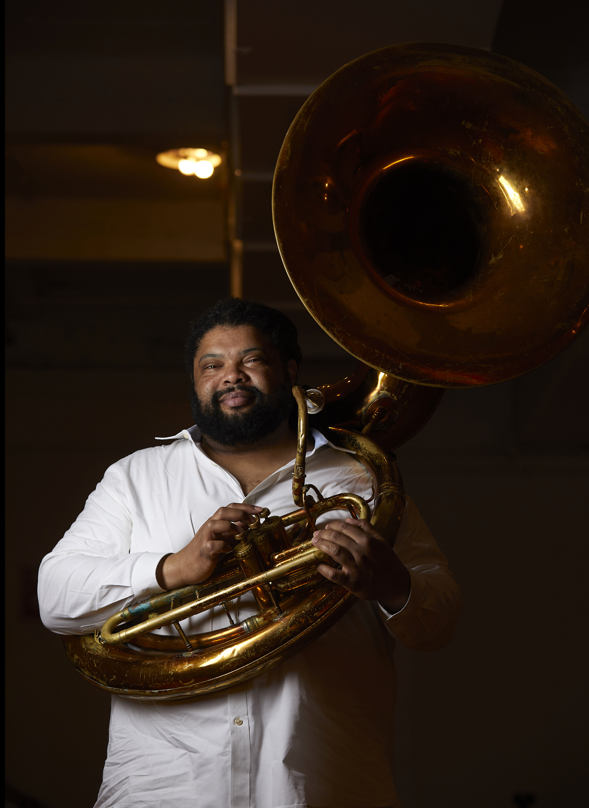

Bio

Kenneth Bentley Jr. was born in Austin, Texas on August 26, 1976. Raised in Round Rock, Texas, Kenny began playing the tuba at age 11 and graduated from Round Rock High School in 1994. He studied with Steve Bryant at The University of Texas at Austin and graduated in the spring of 1999 with a Bachelor’s degree in Orchestral Performance.
During his summers at UT Austin, Kenny worked for the Walt Disney Company at theme parks in California, Paris, and Tokyo. In the fall of 1999, he moved to New York City to study at the Manhattan School of Music with Toby Hanks. In May of 2001, Kenny completed his degree program and received a Master’s degree in Classical Music from MSM.
Kenny is a founding member of the Sugartone Brass Band based in New York City. He performed on Sugartone’s first album, Live in Brooklyn (2008), and performed on and produced the band’s second album, Fourth Man Down (2012). He also performed on and produced Sugartone’s third album, Things are not the Same (2014), and Live at Vegetable Buddies (2018).
Kenny joined the YoungBlood Brass Band in 2004, touring throughout the United States and Europe from 2004–2007 and again in 2009. As a member of YoungBlood, he recorded on two of the band’s albums: Live. Places. (2005) and Is that a Riot? (2006).
In 2023, Kenny joined the Radio City Music Hall Orchestra. He has also appeared in Monsoon Wedding the Musical at St. Ann’s Warehouse (2023) and Jelly’s Last Jam at New York City Center (2024). Kenny currently performs with Slavic Soul Party, Howard Fishman and the Biting Fish Brass Band, Red Baraat, and Brass Against.